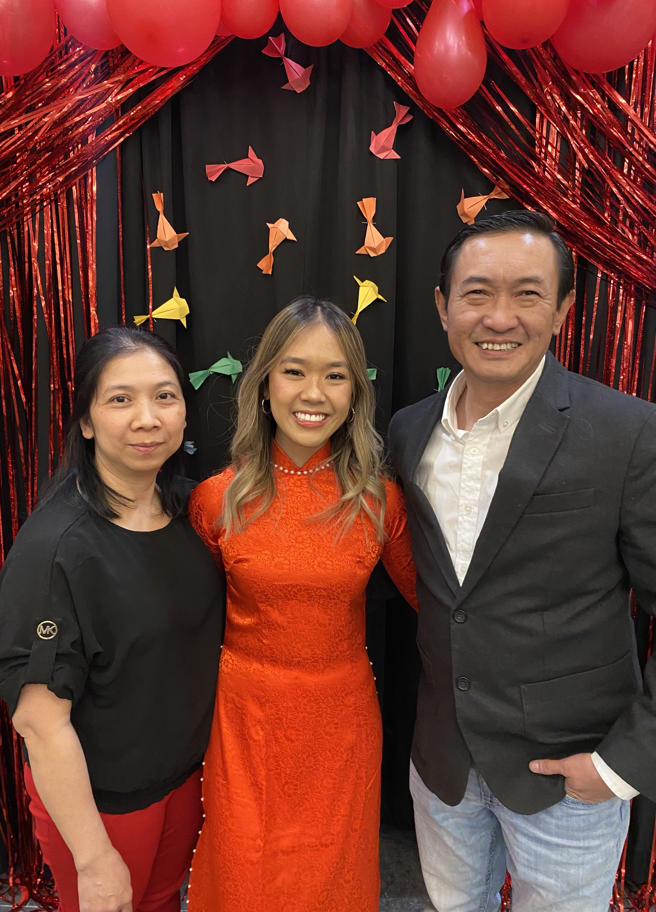

About Me
My name is Phoenix Doan and I am a third year student studying Business Analytics and Information Systems at the University of Iowa Tippie College of Business. I was born and raised in Des Moines, Iowa. My parents immigrated here from Vietnam in 2000 and moved into a small apartment by the hospital I was born at. I am now 21 years old and I am the son of Jim Doan and Tammy Nguyen (pictured above). My family and I have remained in Iowa all of our lives and I believe they plan to retire there as well. I have one younger sibling, my brother, Phillip age 18. I also have a cousin who we sponsored here from Vietnam who also grew up living me. I practically consider her my sister because we grew up sharing a bed.
When I was younger, I spent a lot of my time watching Youtube videos of fashion of lifestyle influencers. I don’t have much family relatives in the United States so I grew up without grandparents and large family gatherings. Instead I spent a lot of time with other kids at the babysitters. I also spent a lot of time at my mom’s nail salon when she would work and I was waiting to be picked up from my dad. My parents were the first in our family to come to the United States so many of my childhood memories is of my parents working. However they did take us to travel a lot, I remember going to Disneyland and lots of road trips. I grew up going to temple every Sunday as well.